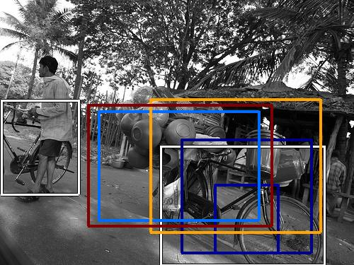

0.443481

0.462396

0.522644

0.533132

0.546635

0.558416

0.608073

0.610887

0.615136

0.651137
| Target image | 0.443481 | 0.462396 | 0.522644 | 0.533132 | 0.546635 | 0.558416 | 0.608073 | 0.610887 | 0.615136 | 0.651137 |
Target image |  2629.758789 |  2578.259277 |  2206.684326 |  1930.131714 |  1902.103394 |  1894.199829 |  1725.218384 |  1718.350708 |  1648.989014 |  1641.081787 |
Target image |  2494.947510 |  2066.187988 |  1891.554932 |  1882.306763 |  1840.172852 |  1826.686157 |  1672.667358 |  1665.792969 |  1655.640503 |  1619.763550 |
| Target image  |  2515.072021 |  2114.492676 |  2089.690186 |  2080.206543 |  1991.363037 |  1987.743286 |  1815.959351 |  1809.920410 |  1785.282104 |  1718.670044 |
Target image |  2188.342041 |  1854.324829 |  1850.054077 |  1838.592773 |  1831.176758 |  1824.102783 |  1805.144043 |  1786.433350 |  1743.595215 |  1683.797241 |